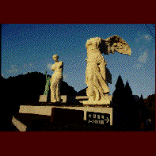

大観音寺/三重県白山町 
三重県のほぼ中央、白山町は榊原温泉口の駅のホームに立つとイヤでも見えてくる異様な光景。10�E近いサモトラケのニケとミロのヴィーナスの向こうに見える30�E以上はある金ピカの巨大観音像。ルーブル彫刻美術館と大観音寺の偉容である。
で、大観音寺の方にまずは行ってみる。ここのテーマは金、ゴールドである。本尊の33�Eの純金大観音をはじめとして、時価（恐らくバブル期の時価）5億円の純金恵比寿、大黒天など、純金モノが渦巻いている。ちなみにこの5億コンビ、直に手で撫でられます。百観音霊場、四国八十八ヵ所お砂踏み霊場、十二支御守本尊霊場などの仏像も全て金ピカ。もうクラクラ来ます。さらに大観音さんが履くのであろう重さ30tの下駄やキモチ悪いガン封じ白澤、大観音の手だけのレプリカなどが次から次へと現われてくれる。
その他カエルや猫のオーケストラ像といったファンシー系もありご家族やカップルも楽しめるといった按配。
建物の設計は黒川紀章。一応、世界的な建築家なんだから仕事選べよ。
お土産物も純金グッズをはじめとしたシブい品揃え。要チェック。
次に向かいのルーブル彫刻美術館へ。こちらは開館当時、結構話題になったので御存じの方も多いかと思うが、所蔵品から直接型をとったモノを展示しているルーブル美術館公認のニセモノ博物館である。しかし良くそんなデタラメが出来たよな。やっぱりルーブル側に相当握らせたんだろうか。勿論ガラスのピラミッドもある。しかしそのピラミッドの下にあるのはオリジナルの千手観音。こっちにまで大観音寺のバッドオーラが押し寄せて来ている。
その他奈良興福寺の阿修羅像や中宮寺の弥勒菩薩半跏像などのレプリカがあるのだが何故かあまり似ていない。そういえばルーブルの所蔵品のニセモノも本物から型をとったとは思えない程出来が良くない。ま、別にどーでもいいんだけど。何も期待してないから。
純金ラッシュとニセモノ美術館。いかにもバブルの御時勢を反映した成金趣味に満ち溢れたスポットでした。
1997.11.
珍寺大道場
HOME